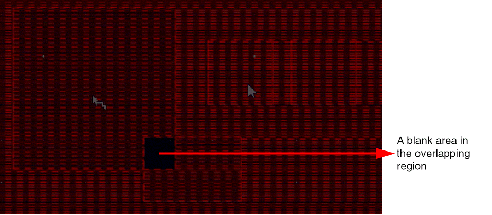
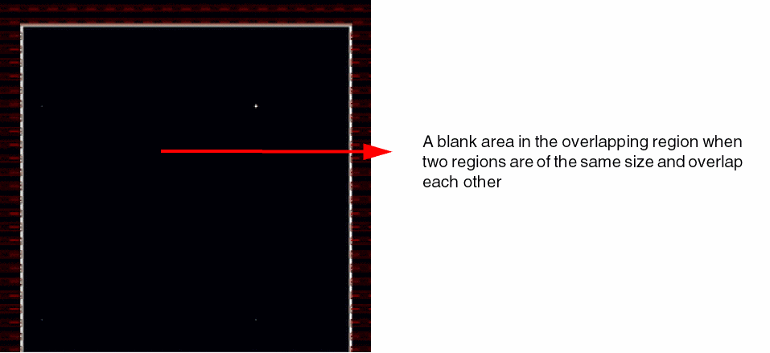
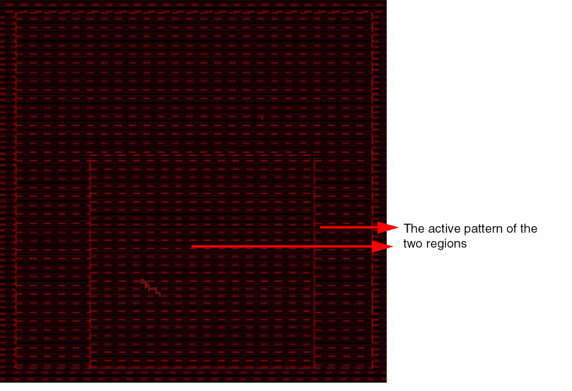

Pin Snapping
A pin that has the snapping LPP that cannot be snapped to a snap pattern will be snapped to a width spacing pattern (WSP). A pin will either snap to a snap pattern or a WSP, but not both.
If a pin shape can be snapped to a snap pattern, there will be no change in the behavior. Otherwise, it will try to snap to WSP. The center of the pin is snapped to the center of the closest track. WSP snapping is only supported for rectangular pins and not polygon pins.
For snapping a pin to a WSP region shape, the applied pattern is considered; and for a global WSP, the default active pattern is considered.
If the target track width is greater than the pin width, the pin width is updated to match the track width. However, if the track width is less than the pin width, the pin is updated based on the value of the minWidth constraint defined in the technology file.
A pin inside an instance matches a WSP track if its width and mask color match that of the WSP track.
Pin Snapping for Overlapping Regions
There can be multiple overlapping regions. The snapping behavior for various scenarios is described below:
-
Region R1 partially overlaps another region R2
The region R1 hasWSP1as the active pattern and the region R2 hasWSP2as the active pattern. The overlap area of the two regions does not have any pattern available and displays a blank area. Also, a pin cannot be snapped inside the overlapping area.
 -
Two regions with the same size overlap each other
The two regions R1 and R2 have the same size. The region R1 hasWSP1as the active pattern and the region R2 hasWSP2as the active pattern. In this case, no snapping is possible inside the overlapping region and pins cannot be created inside this region.
 -
Region R1 is fully enclosed in region R2
Region R1 has2xWidthas the active pattern and region R2 hasWSP1as the active pattern. The tracks in the innermost region are effective for pin snapping. The tracks of R1 are used for snapping pins in the overlapping area and in the remaining area the tracks of R2 are used for snapping.

In WSP detail mode snapping, if your design has pins, they are used for snapping. However, if pins are not available in the design, rectangles, pathSegs, two-point paths, and rectangular polygons are used for snapping.
Also, in WSP detail mode snapping, all wspDefs are searched for in case of local region and non-active wspDefs are filtered in case of global grids.
If the snapRectToWSPGrid environment variable is set, rectangles snap to the WSP grid, similar to pins.
Related Topics
Return to top